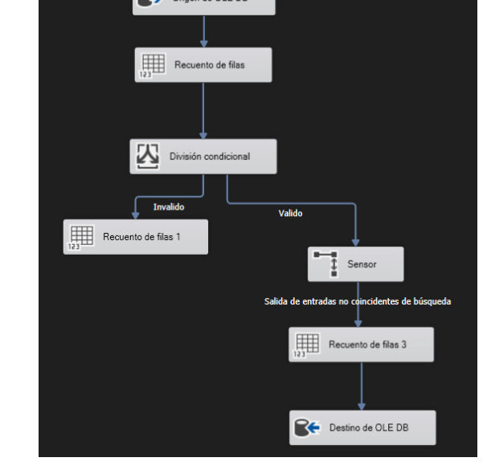

Gestión de datos: MER, DW y ETL
Los archivos proporcionados permiten documentar el diseño del sistema, la simulación de un millón de mediciones y la implementación de transformaciones en SSIS.
Modelo relacional · OLTP
La base transaccional AlmacenamientoLT organiza once tablas. La medición es el registro central: cada fila contiene sensor, parámetro, valor y fecha; un evento puede vincularse a la medición y a un usuario responsable.
| Grupo | Tablas |
|---|---|
| Operación | Procesos, Parametros, TipoEvento |
| Personas | Responsabilidades, Usuarios |
| Infraestructura | TipoTanque, Tanques, TipoSensores, Sensores |
| Datos operativos | Mediciones, Eventos |

Data Warehouse · modelo estrella
La base AlmacenamientoDW almacena una tabla de hechos y siete dimensiones. La granularidad es una medición de un parámetro, tomada por un sensor en un tanque y tiempo determinados; no se agregan las mediciones en el proceso de carga.
| Tabla | Campos relevantes |
|---|---|
| FactMediciones | idMedicion; idTiempo; idSensor; idTanque; idParametro; idProceso; idUsuario; idEvento; valorMedicion; fueraLimite |
| DimTiempo | Fecha, Anio, Trimestre, Mes, Dia, Hora |
| DimSensores | TipoSensor, Nombre, idTanque, modeloSensor, UltimaCalibracion |
| DimTanques | TipoTanque, Nombre, CapacidadTotal, AlturaTanqueCm |
| DimParametros | Nombre, UnidadDeMedida, limites |
| DimProceso | Nombre, Descripcion |
| DimUsuarios | Nombres y apellidos |
| DimEventos | TipoEvento, ValorRegistrado, Descripcion |

Las ausencias de evento, usuario o proceso se representan mediante la clave convencional -1 en esas dimensiones. No representa un valor físico de medición.
Simulación reproducible
El script documentado utiliza Python, random, math, datetime y pyodbc. Genera cinco parámetros por tanque, toma una lectura cada 15 minutos, inicia el 1 de noviembre de 2024 y crea picos de turbidez y anomalías artificiales -1 o 9999. La documentación sitúa el final alrededor del 26 de septiembre de 2026: la fecha exacta de la tabla DW queda por confirmar.
ETL real inspeccionado · SSIS
- Ejecutar consultas
MAX(idMedicion)en origen y DW para delimitar nuevas mediciones. - Cargar DimProceso, DimTanques, DimSensores, DimParametros, DimUsuarios, DimEventos y DimTiempo. Los Lookup evitan la inserción repetida de IDs ya existentes.
- Homologar valores de categorías con
UPPER(TRIM(...))en dimensiones seleccionadas; derivar la clave horariayyyyMMddHH. - En la fact, rechazar mediante División condicional los registros con
valorMedicion < 0ovalorMedicion > 5000; registrar conteos y enviar la rama inválida a archivo plano. - Resolver sensor→tanque, parámetros→límites/proceso, evento→usuario y tiempo mediante Lookup; calcular
fueraLimitecuando la medida sobrepasa umbrales disponibles. - Cargar FactMediciones en el DW tras resolver referencias, sin duplicar la carga incremental.

Diferencia documental que requiere revisión: el PDF también menciona el rechazo de valores nulos e IDs inválidos, mientras que la expresión real de la División condicional inspeccionada solo comprueba valorMedicion < 0 o valorMedicion > 5000. No se afirma que las otras reglas estén implementadas en ese componente sin verificarlas.
Calidad y trazabilidad
| Regla | Evidencia o restricción |
|---|---|
| Errores sintéticos | El texto del PBIX declara 9.964 registros rechazados, asociados a valores -1 y 9999. |
| Porcentaje de rechazo | 9.964 / 1.000.000 = 0,9964 % del volumen simulado, suponiendo correspondencia directa entre esas bases. |
| Filas válidas actuales | [COMPLETAR: COUNT(*) de AlmacenamientoDW.dbo.FactMediciones]. |
| Cobertura temporal | [COMPLETAR: MIN(Fecha), MAX(Fecha), filas por mes en DW]. |
| Valores no vinculados | -1 para dimensiones sin evento, usuario o proceso, según documentación. |
| Análisis de atípicos | Valores extremos válidos deben revisarse por variable, no descartarse automáticamente. |
| Medidas del PBIX | TotalMediciones, SenosresActivos, % FueraLimite, Total Eventos, Promedio Valor, Mediana Valor, P95 Valor. |
| Fórmulas DAX | [COMPLETAR: exportar fórmulas DAX/TMDL. El modelo tabular está comprimido dentro del archivo PBIX y no fueron recuperables de sus visuales]. |